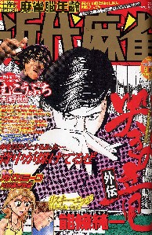
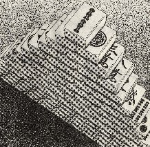
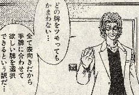
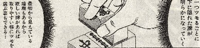
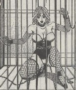

月刊近代麻雀（９月15日号）の真テラバイト（原作・平井りゅうじ、作画・戸田邦和）という漫画に登場する牌ゲーム。

なんか面白そうなので収録した。細かいルールはよく分からないのだが、プレーヤーは２人でも３人でも４人でもＯＫのようだ。
マンガではピラミッド専用の自動卓が登場するが、こっちにはそんな便利なものはない。そこで急遽、手積み方式を考案してみた。
まず全牌をよくかき混ぜたのち、すべて表向きにして１列17枚の８段（Ａ段〜Ｈ段）四方形を作る。
Ａ 
Ｂ
Ｃ
Ｄ
Ｅ
Ｆ
Ｇ
Ｈ
□２人プレー
東家はＡ段左側より13枚、南家はＢ段左側より13枚取得してそれぞれの手牌とする。
東家 Ａ
南家 Ｂ
右側に残された８枚のうち５枚は王牌として適当な場所に１列にして並べる。末尾の１枚を表向きにし、ドラ表示牌とする（残りは王牌はカンがあったとき使用する。）。残った３枚はピラミッドの最上段牌とする。
↓ドラ表示牌 ピラミッドの最上段牌として使用

カンがあれば、カンドラが増える
残された６列をすべて仰向ける。そしてＣ段を14枚(c1)と３枚(c2)の２組に分ける。次のＤ段を13枚(d1)と４枚(d2)、Ｅ段は12枚(e1)と５枚(e2)、以下Ｈ段まで同様に分ける。
Ｃ段 （c1) （c2)
Ｄ段 （d1) （d2)
Ｅ段 （e1) （e2)
Ｆ段 （f1) （f2)
Ｇ段 （g1) （g2)
Ｈ段 （h1) （h2)
次にd1を c1の上に、e１を d1の上に〜〜、h2を h1の上に〜〜、c2を d2の上に載せ、14段のピラミッドを作る。

東家と南家を決めた後、東家より交互にピラミッドの最上段牌から摸打する。もちろん最上段牌は選択の余地はないが、２段目からは選択自由。かといってピラミッドを崩したりしたら即負け。


交互に摸打して、早く１雀頭４メンツを完成した方がアガリ。通常のリーチルールでプレーするが、２人プレーの場合 ロンアガリは倍づけ。前局アガったプレーヤーが東家となる。以下、繰り返す。誰かが支払い不能になった時点で終了。
面倒なので、得点計算は
親 1500 3000 6000 12000 18000 24000 36000
48000
子 1000 2000 4000 8000 12000 16000 24000
36000
４人プレーは通常と同じ計算。
３人プレーはツモ損....
□３人プレー
ＡＢＣ列の左側が各自の手牌。右側の12枚のうち、６枚が王牌、６枚がピラミッド用の牌。
Ａ
Ｂ
Ｃ
Ｄ
Ｅ
Ｆ
Ｇ
Ｈ
□４人プレー
ＡＢＣＤ列の左側が各自の手牌。右側の12枚のうち、６枚が王牌、10枚がピラミッド用の牌。
Ａ
Ｂ
Ｃ
Ｄ
Ｅ
Ｆ
Ｇ
Ｈ
サービス(^-^；

|